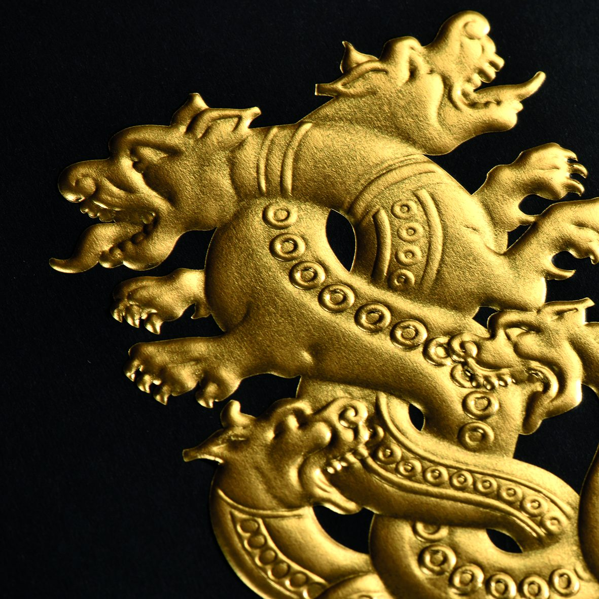
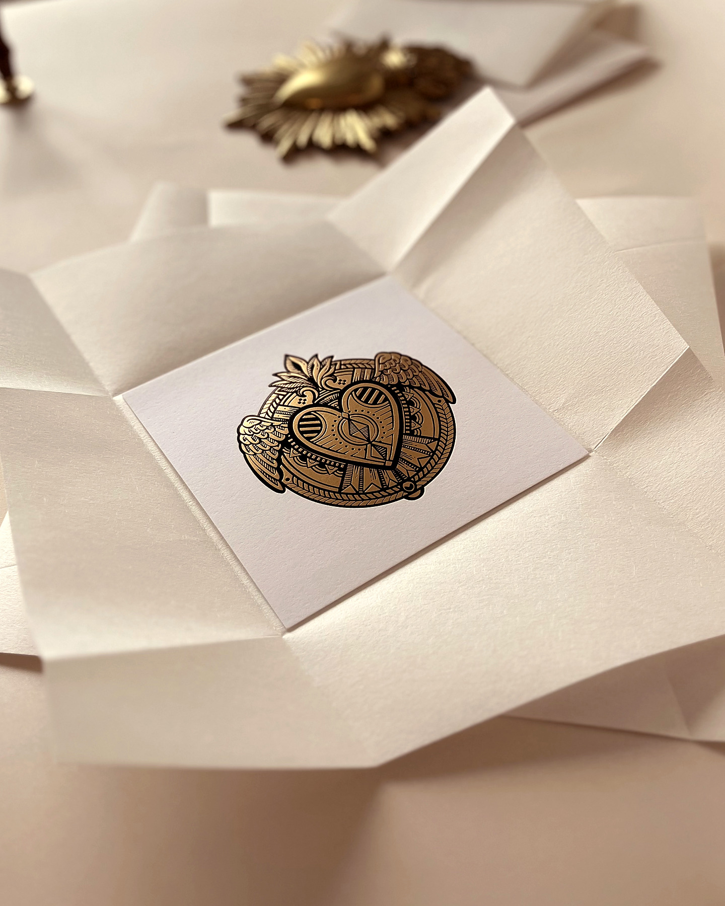
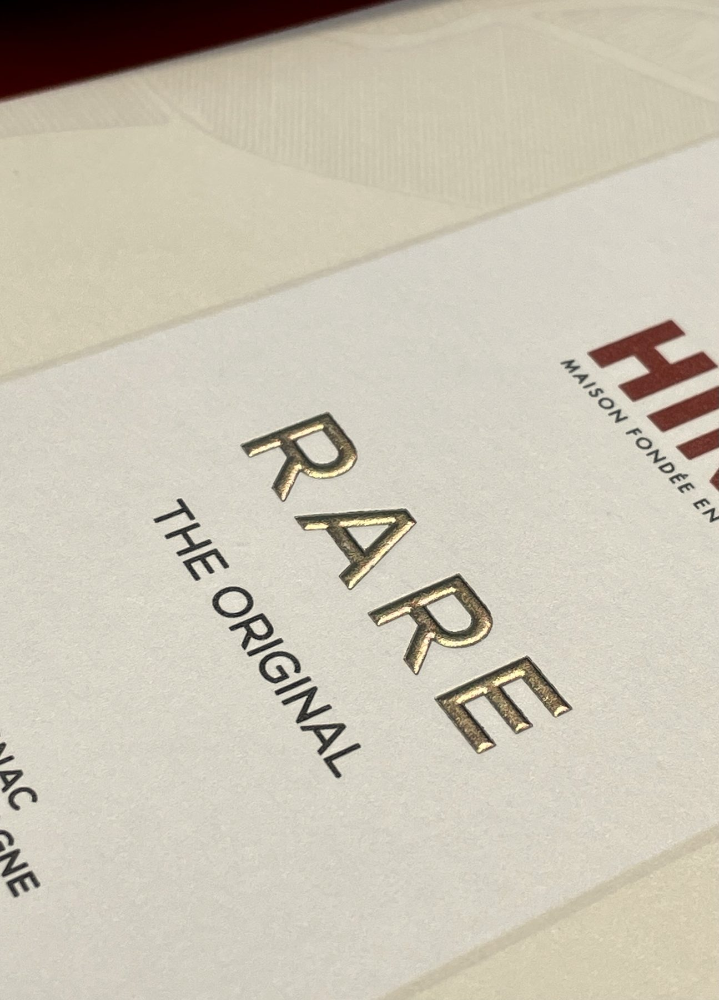
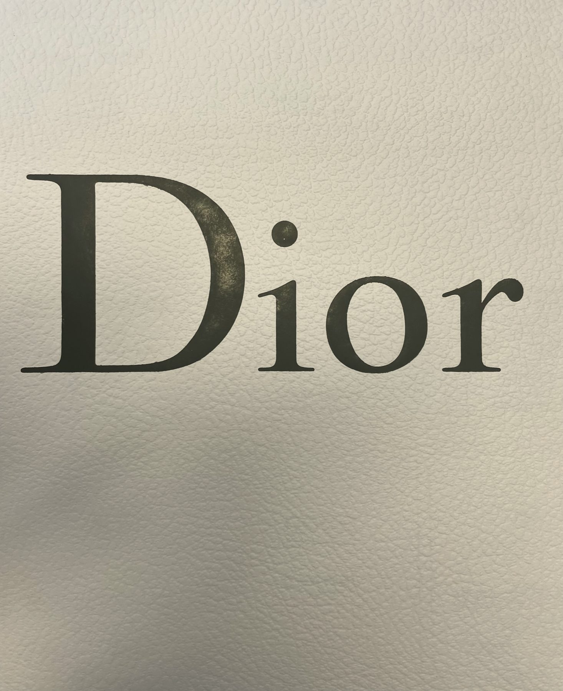
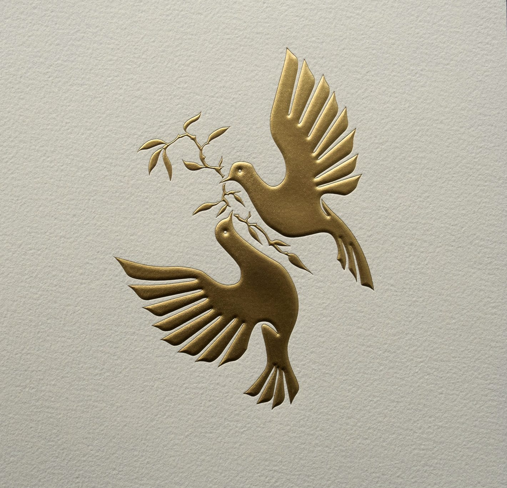
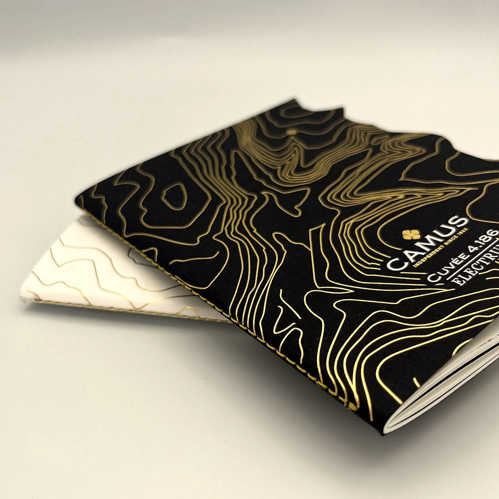
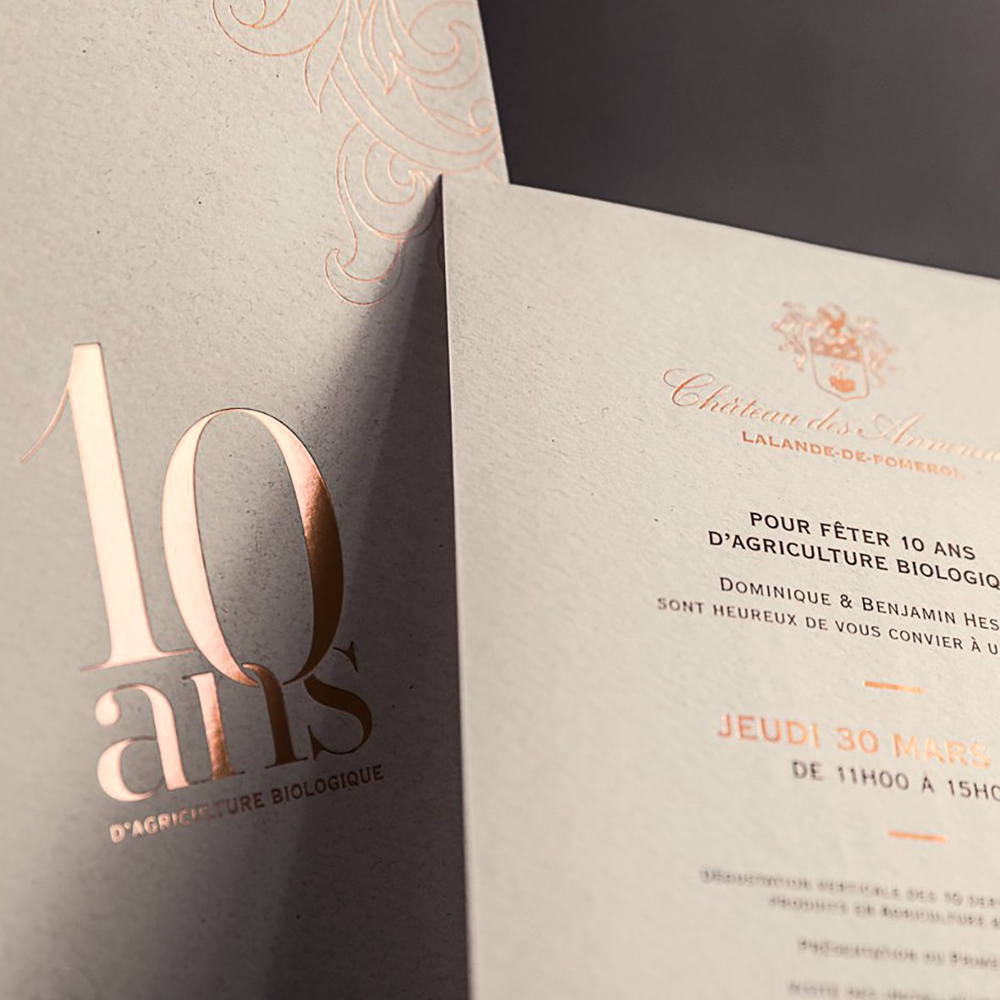

Accueil / Savoir-faire / Dorure à chaud
Dorure à chaud
Un film métallisé ou pigmenté, déposé à chaud sur votre feuille : le logo accroche la lumière et l'emballage gagne sa signature. À plat ou galbée, seule ou associée à d'autres finitions.

Plus de 50 teintes de films en stock
Métallisés ou pigmentés, brillants ou mats : chaque film existe en plusieurs qualités de colle pour accrocher sur votre support.
Cliquez surTouchez une teinte pour voir le résultat sur le motif
Métallisés
Pigmentés (non métalliques)
Teintes indicatives : demandez-nous la référence exacte pour votre projet.
Ce que nous réalisons
Trois façons de travailler la dorure, selon l'effet recherché, pour les imprimeurs du luxe, de la parfumerie, des vins et spiritueux et de la papeterie.

Dorure à plat
Un aplat net et brillant, pour les logos, les textes fins et les motifs graphiques.

Dorure galbée
Le relief et la dorure en un seul passage : le motif se soulève et capte la lumière sur ses courbes.

Dorure et gaufrage
Une dorure posée au cœur d'un décor en relief, pour une pièce riche au regard comme au toucher.

Luxe
Vins & Spiritueux
Parfumerie
Papeterie haut de gamme
Vins & Spiritueux
Papeterie
En pratique
- Format maximum
- 75 × 105 cm
- Supports
- Papier et carton compact, de 0,1 à 1,8 mm
- Finesse de trait
- 0,3 mm en trait plein, 0,5 mm en réserve
- Films
- Plus de 50 teintes en stock, métallisées et pigmentées
- Délai moyen
- 1 à 2 semaines, transport compris
- Essais
- Possibles pour les dossiers techniques
Questions fréquentes
Peut-on dorer sur un papier pelliculé ou vernis ?
Oui. Indiquez-nous le support exact : nous sélectionnons le film adapté.
Quelle différence entre dorure à plat et dorure galbée ?
La dorure à plat dépose le film sur une surface plane. La dorure galbée met le motif en relief dans le même passage : il prend du volume et accroche la lumière sur ses courbes.
Et en dessous de 0,3 mm ?
Le film risque de boucher ou de ne pas accrocher. Nous vous conseillons un essai avant la série.
Un projet de dorure ?
Se combine avec le gaufrage, la découpe, le pelliculage et le vernis sélectif, dans le même atelier.